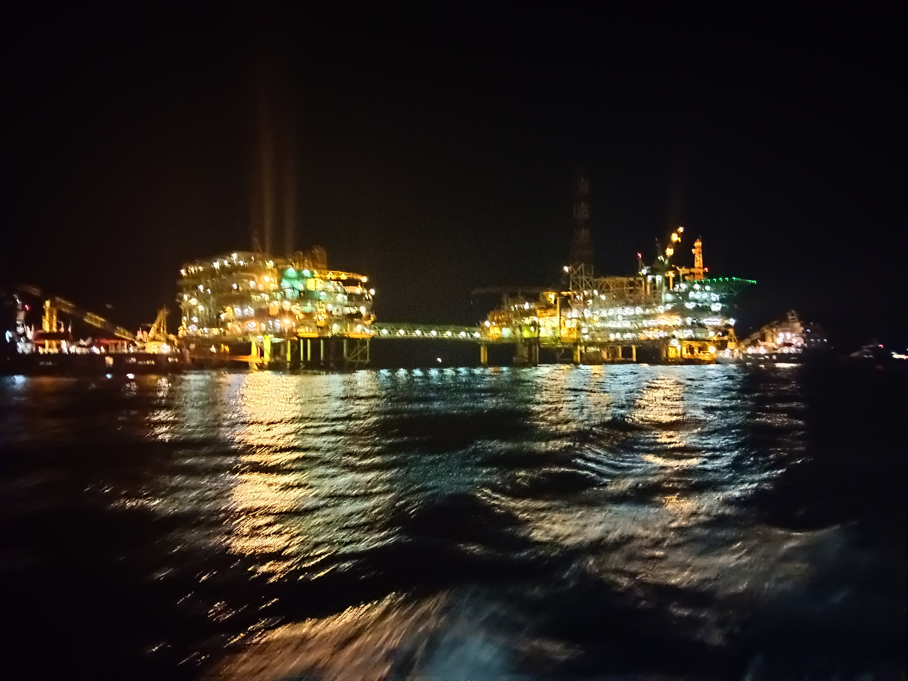
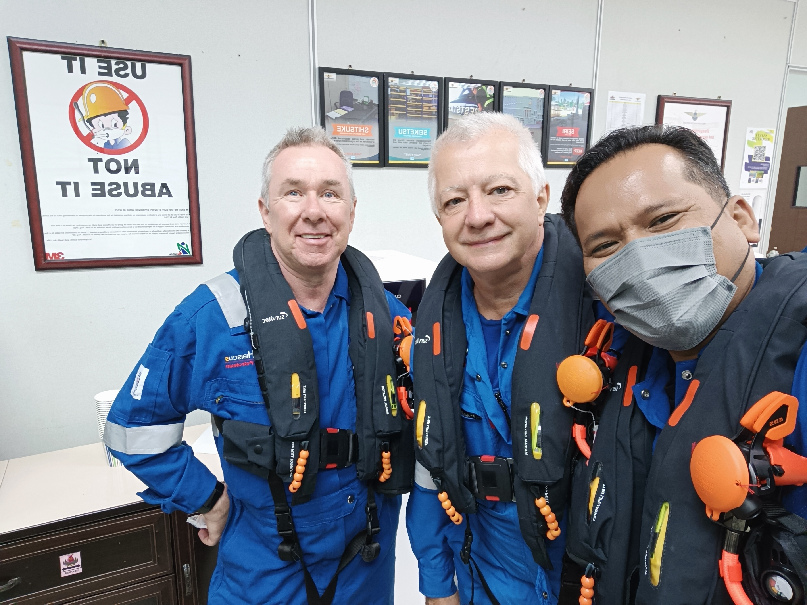

Life Journey That Shape Us
Life is mysterious. It makes people cry and laugh for a different reason. It is a journey forced on everybody to go through. No option.
It built from a combination of millions evens. The beautiful about this journey, we have no option in starting but we have absolute control in our action and in making choice.
We determined who we are and how we ended.
It is like a Power Turbine - Simple operation but complicated process..but the output is tremendous.


Orang Minyak Joueney
At beginning I did not choose to be an Orang Minyak.
I refused to go to university after SPM because I wanted to be a captain for a merchant ship.
My parents made their decision and deliver the message very effectively.. by giving a kind of look and without saying a word when I put the offer letter and scholarship agreement from Malaysia International Shipping Corporation (MISC) in front of them.
Today I am grateful of being an obedient son.
My mother magic word "I know you can do because you are my son" make me keep pedaling eventhough I cry in pain
Now I taste the fruit of the magic word.